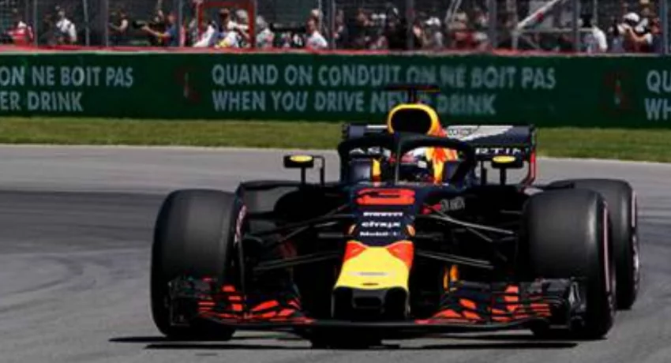
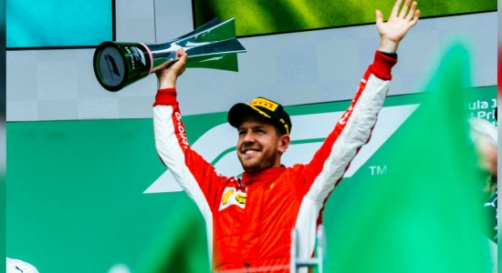
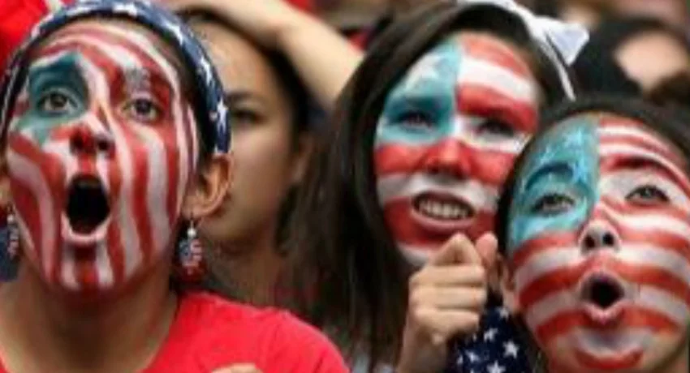

REUTERS – Red Bull will use Honda engines next season in a switch that marks the final severing of a once-dominant Formula One partnership with Renault that turned sour.
“After careful consideration and evaluation, we are certain this partnership with Honda is the right direction for the team,” Red Bull Racing principal Christian Horner said in a statement announcing the deal for 2019 and 2020.
Red Bull won four drivers’ and constructors’ championships in a row with Sebastian Vettel, now at Ferrari, and Renault between 2010 and 2013.
The pairing also won 47 races before the current V6 turbo hybrid power units were introduced but Renault’s struggles with the new format stretched the relationship to breaking point and the British-based team now brand their engines, Tag Heuer.
Honda also had their difficulties, switching to Red Bull’s junior team Toro Rosso this season after a failed three-year partnership with McLaren ended in mutual recrimination.
McLaren now uses Renault power units, but their car has still under-performed Red Bull.

REUTERS : Sebastian Vettel won the Canadian Grand Prix for Ferrari on Sunday to retake the lead in the Formula One world championship from Mercedes’ Lewis Hamilton by a single point.
The victory, from pole position, was the 50th of the German’s career and his third of the season. It was Ferrari’s first in Canada since seven-times world champion Michael Schumacher in 2004.
Finnish driver Valtteri Bottas was second for Mercedes with Dutch youngster Max Verstappen third for Red Bull. Hamilton finished fifth.
In a rare mistake, the chequered flag was waved a lap too early.

Although the United States, Mexico and Canada has had a year of increased political tension between themselves, they have been chosen to host the 2026 FIFA world cup.
According to a member vote that was carried out by FIFA in Moscow on Wednesday (June 13th) the joint North American countries won over their rivals Morocco to host one of the world’s biggest sporting spectacles.
It will be the first time in the World Cup history that the host country will be shared by three different nations, but since the unified bid was announced in April 2017 political relationships between the US and its proposed co-hosts have been touchy at times.
The United Bid promises to bring all three nations closer together for what will be the largest edition of the tournament to date where 48 countries will compete. The North American bid’s revenue forecast was $14.3 billion, with a record profit of $11 billion for FIFA.
For the record, the last time the US hosted a men’s World Cup was in 1994, and Mexico in 1986. Canada had never previously hosted any of the World Cup matches. Under the North American proposal, 60 of the tournament’s matches will be held in the US, including everything from the quarterfinals onwards, while Mexico and Canada will host 10 games each.
Apart from political and trade tensions, there had also been worries that President Trump’s travel ban blocking immigration from several Muslim-majority countries which are currently being challenged in the US Supreme Court could affect many fans, officials and players.
However, Trump had promised FIFA that foreign teams, officials and fans will be able to travel to the US without scrutiny. The United bid in a letter to the FIFA in March had stated that, it “intends to issue visas, subject to eligibility under U.S. law, without regard to race, skin color, ethnic, national or social origin, gender, language, religion, political opinion or any other opinion, disability, wealth, birth or any other status, or sexual orientation.”
The statement also carried that the bid organizers were confident that “every eligible fan and member of our FIFA family will have unhindered access to our country to experience and celebrate the 2026 FIFA World Cup.”
And also despite many political differences, the World Cup bid has given the US, Canada and Mexico a common cause, with the North American bid having received the full support of their governments.